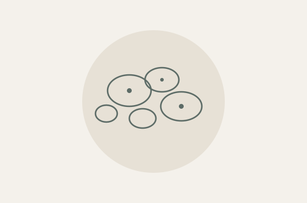
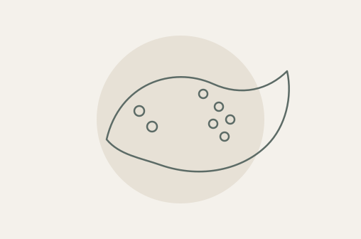
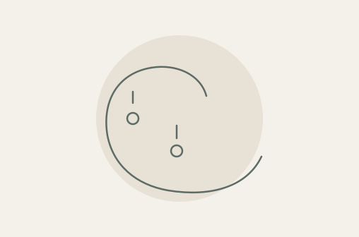

Исследования для разных диагностических задач
Пренатальный скрининг, оценка микрофлоры, аллергодиагностика и исследования желудочно‑кишечного тракта. Особенности тестов и материалы для врачей — в одной подборке.

Пренатальный скрининг, оценка микрофлоры, аллергодиагностика и исследования желудочно‑кишечного тракта. Особенности тестов и материалы для врачей — в одной подборке.

№ 6НИПТ. Скрининг по крови беременной: риск хромосомных нарушений у плода, анеуплоидии всех хромосом и 60 микроделеционных и микродупликационных синдромов. Показатели зависят от особенностей беременности. Результат оценивает риск, а не устанавливает диагноз.
№ 3060. Комплексное исследование микрофлоры урогенитального тракта у женщин методом ПЦР. Оценивает состав нормальной и условно‑патогенной микрофлоры, выявляет ряд возбудителей инфекций и репродуктивно значимых вирусов.

№ 1881‑К. Исследование для широкой оценки сенсибилизации к аллергенам и их белковым компонентам. Результаты помогают врачу разобраться в профиле сенсибилизации и перекрёстных реакциях. Для анализа используется сыворотка крови.
120 аллергенов
180 аллергокомпонентов
Общий IgE
Выявленная сенсибилизация сама по себе не является диагнозом аллергии. Результаты исследования оценивает врач с учётом клинической картины.
Смотреть вебинар
Неинвазивная оценка состояния печени с помощью расчётных алгоритмов на основе биохимических показателей крови и данных пациента.
№ 3ФТ ФиброТест: оценка фиброза и некровоспалительной активности. № 4НФТ НЭШ‑ФиброТест: расширенная оценка, включающая фиброз, стеатоз и стеатогепатит.
Исследование показателей крови, которое даёт информацию о структурном и функциональном состоянии слизистой оболочки желудка. Доступны два варианта: без стимуляционной пробы и со стимуляцией.

№ ГАСТР: однократное взятие крови натощак. № ГАСТР978: взятие крови натощак и повторно после белкового завтрака. Стимуляционная проба помогает уточнить причины сниженного уровня гастрина‑17.
Смотреть вебинар№ 842. Исследование на скрытую кровь в кале с выявлением гемоглобина и гемоглобин‑гаптоглобинового комплекса.
Подробнее о составе исследований и особенностях методов — в буклетах и вебинарах. Ссылки на записи размещены в соответствующих разделах подборки.
Необходимость исследования и интерпретацию результатов определяет лечащий врач.